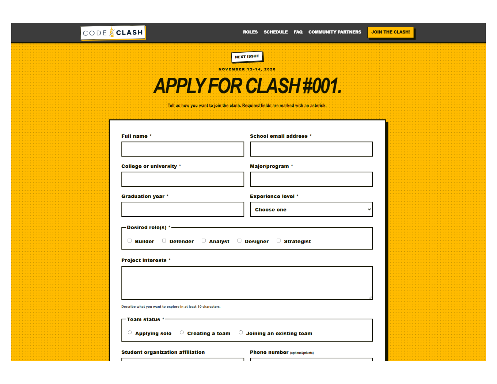
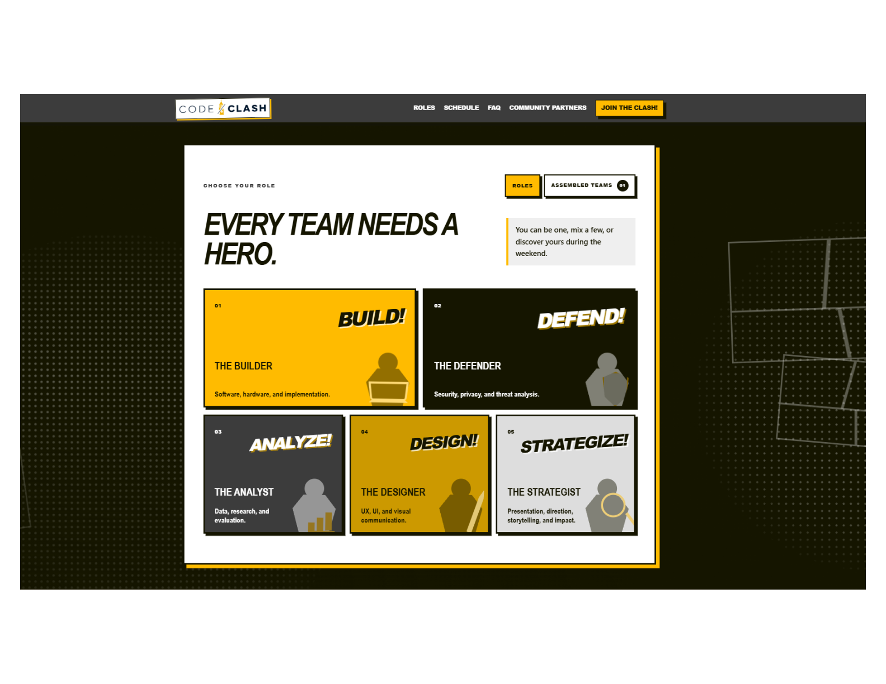
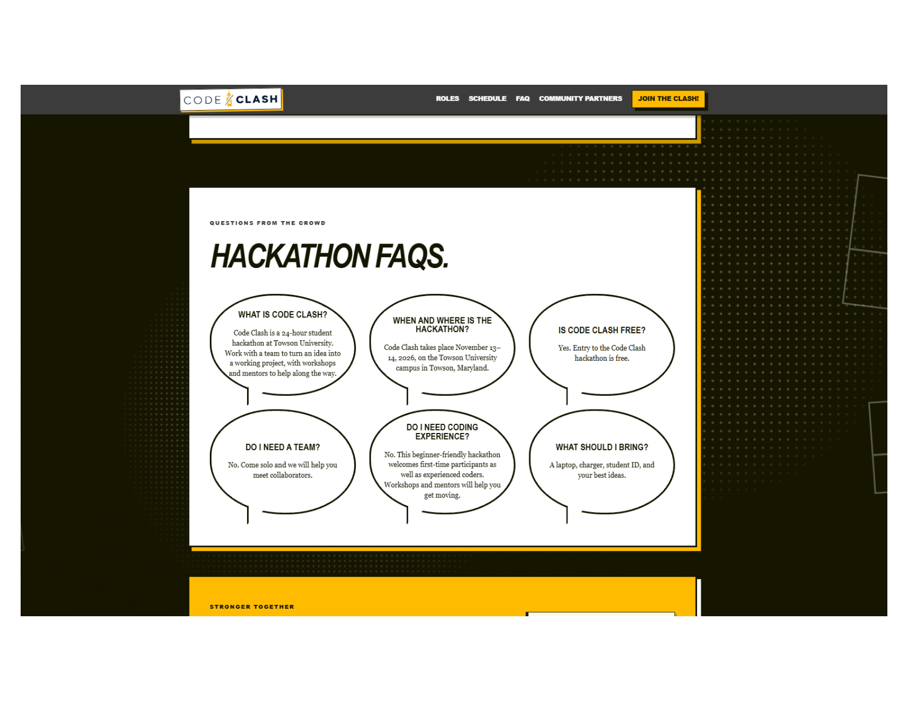

Web design & development
CODE/CLASH
Platform
A comic-inspired platform for a planned 24-hour Towson hackathon, bringing event information, registration, and team formation into one place.
- Date
- July 2026 - August 2026

Overview
CODE/CLASH is a proposed 24-hour student hackathon presented by Bit Brothers at Towson University. I designed and built its public-facing website to help students understand the event, explore participant roles, review the schedule and FAQs, and apply to take part.
The platform also includes a public team board and an organizer dashboard for application review and team management.
The Problem
A new hackathon needs a clear home where students can learn what it is, how to participate, and what to expect. Organizers also need a way to review applications and help participants find teammates.
I brought those needs together in one platform, with public event information for participants and management tools for organizers.

Process
Research
I mapped the needs of two audiences: students looking for event details and teammates, and organizers coordinating applications and teams.
Design
I built the visual direction around CODE/CLASH's Ideas Assemble theme, using comic-inspired details to make the platform feel energetic while keeping key information easy to find.
Build & Test
I developed the responsive site with HTML, CSS, and JavaScript, and connected Supabase features for applications and team coordination. I also built an organizer dashboard for reviewing applications and managing teams.

Design direction
A comic-inspired identity gives the event a recognizable personality and supports the Ideas Assemble theme.

The details
The site brings event information, participant roles, schedule, FAQs, applications, and team formation into one experience, with an organizer dashboard supporting event planning.
Outcome
The result is a live platform for the CODE/CLASH planning initiative. Students can explore the proposed event and apply, while organizers can review applications and coordinate teams. Registration is open; event dates, venue, and programming remain subject to approval and change.